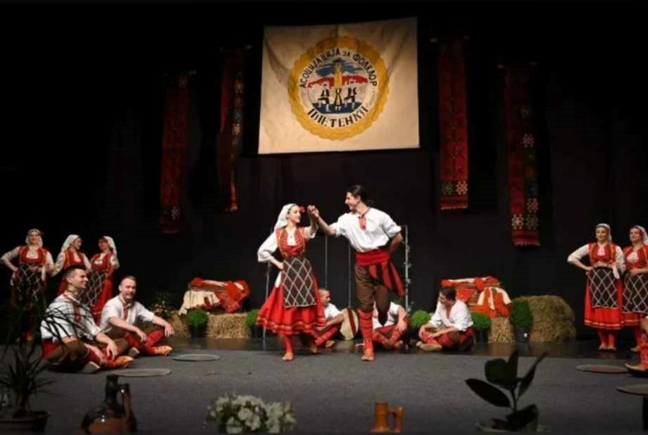
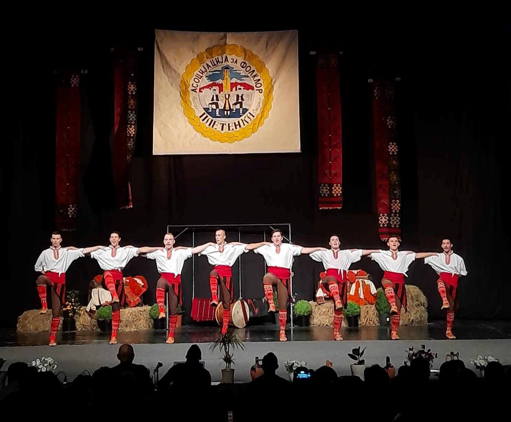
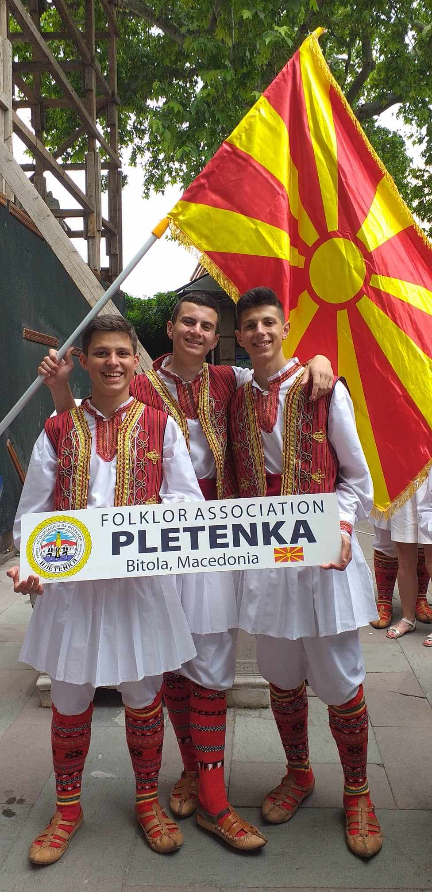

Folklore
I'm a folklore dancer since I was five years old and that's 15 years in the folklore industry and still going. Dancing is one of the things I love doing, and it makes me happy, and it empties my mind and soul.It's one of the things I'm excel at doing.In my fifteen years of dancing ,I've been part of numerous festivals and concerts ,as well as folklore competitions, and I've visited a lot of foreign places.Also being part of a big group taught me how to work as a team and be a team player when I have the same goal with lots of other people.
  Biking
I started biking when I bought my first mountain bike back in 2015.At the start it was pretty tough but with more and more practice I've managed to get in great shape and visit a lot of top mountain bike as well as road bike destinations .My bike is a big part of who I am and biking will be one of the things I'll continue doing because it's great for me and my physical and mental health.
Football
I started playing football when I was 10 years old because my friend made me do it ,and I immediately fell in love with the sport. Football was my passion and I acquired a lot of friends and great memories while I was playing.I stopped playing football professionally back in 2020 because of my second knee injury ,but I couldn't stop playing it and I occasionally play it in the amateur sunday league.